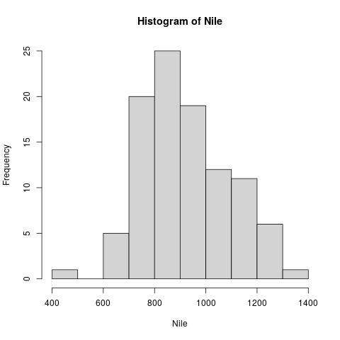
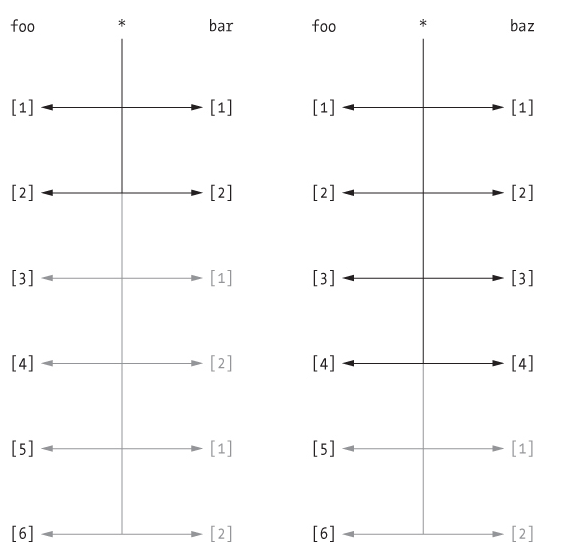

VECTORS
Table of Contents
- 1. WHAT WILL YOU LEARN?
- 2. EVERYTHING IS AN OBJECT
- 3. ASSIGNING OBJECTS
- 4. WHY WE NEED VECTORS
- 5. CREATING VECTORS
- 6. DOWN THE NILE
- 7. PLOTTING THE NILE
- 8. THE OBVIOUS
- 9. CREATING SEQUENCES AND REPETITIONS
- 10. SORTING AND MEASURING LENGTHS
- 11. EXERCISES AND SOLUTIONS
- 12. SUBSETTING
- 12.1. Vectorization 1-2-3
- 12.2. The row labels, like
[1], correspond to the index - 12.3. Subsetting: retrieving vector elements
- 12.4. Using colon operator in index
- 12.5. Careful with sequences: is
foo[n]:foo[m]==foo[n:m]? - 12.6. Stats functions work on any vector subset:
mean,sum, - 12.7. Logical functions in vectors:
<,>,!=,== - 12.8. Selecting with logical index vectors
- 12.9. Exercise with
Nile - 12.10. Negative indices - removes elements (only output, no overwrite)
- 12.11. Putting dissected vectors back together
- 12.12. Defining and using vectors of indices
- 12.13. Overwriting a subvector with another vector
- 12.14. Exercises and Solutions
- 12.15. Example: rescaling
- 12.16. Vector Recycling
- 12.17. Class exercise: rescale from inches to cm
- 12.18. Exercises & Solutions
- 13. NAMING
- 14. EXAMPLE DATASET
islands - 15. INDEXING VECTORS (AGAIN)
- 16. COERCION
- 17. SUMMARY
- 18. SOURCES
1 WHAT WILL YOU LEARN?
After this lesson, you should be able to:
- Understand assignment in R
- Creating vectors, sequences and repetitions
- Sorting and measuring vector length
- Subsetting and extracting vector elements
- Vectorizing (rescaling)
- Classes and logical vectors
2 EVERYTHING IS AN OBJECT
R is a functional, object-oriented language: everything's an object, and functions rule, as you already know. Because functions rule, there are usually many different ways to achieve the same result. They often differ in terms of performance, ease of use, and clarity. Performance becomes important when you work with truly large data sets, otherwise not so much. Ease of use to some extent determines the fun you do or don't have when using the language. Clarity is essential when communicating your methods (including your code) and your results to others. This is not a nice to have. Views of different packages (like the Tidyverse) differ massively regarding all of these.
3 ASSIGNING OBJECTS
We talk about "assigning values to a variable" or "storing values
in a variable." These expressions are interchangeable. We can use
<- or = for assignment. Whatever you do, try to be consistent.
x <- 5 # assigns 5 to a variable x x # prints the content of x to the screen y = 10 # assigns 10 to a variable y print(y) # prints the content of y to the screen x+y # adds content of both variables x <- x + 1 # overwrites value of x x # prints new content of x
The session results:
> x <- 5 > x [1] 5 > y = 10 > print(y) [1] 10 > x+y [1] 15 > x <- x+1 > x [1] 6
Because you can overwrite variables easily, = could be confusing,
because it looks like mathematical equality (a status) while it
actually is an action. = is usually reserved for setting arguments
inside functions. You've seen this before: log(x=100, b=10).
There are also some naming rules: objects must start with a letter
and they must avoid reserved words (like TRUE or
NA). Interesting objects for us include: vectors, factors, and
data frames.
Problem:
- Create an object
athat stores the value \(3^2\times 4^\frac{1}{8}\)- Overwrite
awith itself divided by \(2.33\). Print the result to the console.- Create a new object
bwith the value \(-8.2\times 10^{-13}\)- Print to the console the result of multiplying
aandb.
Solution:
a <- 3^2 * 4^(1/8) # 1) 10.70286 a <- a/2.33 # 2) 4.593504 a b <- (-8.2) * 10^(-13) # 3) -8.2e-13 a * b # 4) -3.766673e-12
The session results:
> a <- 3^2 * 4^(1/8) > a <- a/2.33 > a [1] 4.593504 > b <- (-8.2)*10^(-13) > b [1] -8.2e-13 > a * b [1] -3.766673e-12
4 WHY WE NEED VECTORS
We need vectors to handle multiple items in R (more than one data point). Interesting data are usually made up of multiple items. Think of a vector as a collection of observations or measurements concerning a single variable. An important condition for vectors is that all entries must be observations of the same type1.
CHALLENGE
Give three examples of such collections that could make up vectors: 1) numbers, 2) text, 3) logical values.
SOLUTION
- the heights of every student of this class, in cm.
- the first names of every student of this class (strings).
- observations, if a student is male or not male (male means
TRUE).
Let's put some wood behind the arrow and define sample vectors for these:
s_heights <- c(180, 181, 158, 175, 179, 168) s_names <- c("Vincent", "Natalija", "Adrian", "Andres", "Helena") s_male <- c(TRUE, FALSE, TRUE, TRUE, FALSE)
In order to check what R thinks about your observation or data type,
you can use the function class. Look at the help page for details
and enter the examples at the bottom of the help page.
Let's call class for our three sample vectors:
class(s_heights) # what type vector is this? class(s_names) # what type vector is this? class(s_male) # what type vector is this?
The resulting session output:
> class(s_heights) [1] "numeric" > class(s_names) [1] "character" > class(s_male) [1] "logical"
5 CREATING VECTORS
The function to create a vector, or "combine values", is c():
myvec <- c(1,3,1,42) # combine integers as vector myvec # prints 1 3 1 42 class(myvec) # determine the data type - "numeric"
The session results:
> myvec <- c(1,3,1,42) > myvec [1] 1 3 1 42 > class(myvec) [1] "numeric"
Vector elements can be calculations or previously stored items:
foo <- 32.1 myvec2 <- c(3, -3, 3.45, 1e+03, 64^0.5, 2+(3-1.1)/9.44, foo) myvec2
The resulting output - note that [1] and [7] are row labels:
[1] 3.000000 -3.000000 3.450000 1000.000000 8.000000 2.201271 [7] 32.100000
The session results:
> foo <- 32.1 > myvec2 <- c(3, -3, 3.45, 1e+03, 64^0.5, 2+(3-1.1)/9.44, foo) > myvec2 [1] 3.000000 -3.000000 3.450000 1000.000000 8.000000 2.201271 [7] 32.100000
Vector elements can even be vectors themselves:
myvec3 <- c(myvec, myvec2)
myvec3
class(myvec3)
In the resulting output, the two vectors were put side by side. The new vector now has \(11 = 4 + 7\) elements:
[1] 1.000000 3.000000 1.000000 42.000000 3.000000 -3.000000 [7] 3.450000 1000.000000 8.000000 2.201271 32.100000 [1] "numeric"
The session output:
> myvec3 <- c(myvec, myvec2) > myvec3 [1] 1.000000 3.000000 1.000000 42.000000 3.000000 -3.000000 [7] 3.450000 1000.000000 8.000000 2.201271 32.100000 > class(myvec3) [1] "numeric"
Problem:
What about missing values,
NA, and non-numbers,NaN, and what about the special valuesInfand-Inf- can you have these in vectors, too? Can you think about a way to test this?
Solution:
> specvec <- c(NA, NaN) # a vector with a NA and a NaN > specvec [1] NA NaN > class(specvec) [1] "numeric" > is.nan(specvec) # testing for NaN values [1] FALSE TRUE > is.na(specvec) # testing for NA values [1] TRUE TRUE > specvec1 <- c(specvec, Inf, -Inf) # a new vector with Inf, Inf > specvec1 [1] NA NaN Inf -Inf > is.finite(specvec1) # testing for finiteness [1] FALSE FALSE FALSE FALSE > is.infinite(specvec1) # testint for infiniteness [1] FALSE FALSE TRUE TRUE > class(specvec1) [1] "numeric"
A more elaborate way of generating a non-number
6 DOWN THE NILE
Let's not forget that there are real data out there! R (i.e. "Base-R") includes a number of built-in datasets (i.e. you don't have to install any packages to access them).
Problem:
Do you remember how to find these pre-loaded datasets? One of these is
Nile. Do you remember how to get information on such a dataset (or on any R object)?
Solution:
data() # lists all available/loaded datasets ?Nile # opens help page for the dataset Nile
Nile contains a so-called "time series", a sequence of numbers
that correspond to measurements of the annual flow (in billion -
10⁸ - cubic meters) of the river Nile at Aswan, measured between
1871-1970. You can use class to confirm it:
class(Nile) # what type of dataset is this?
The output is "ts", or time series. You may remember that we
previously looked at large datasets. mtcars for example was a
"data frame" (we'll learn more about them later).
Problem:
How can we print this dataset on the screen?
Solution: there are different ways to look inside Nile:
str(Nile) # show dataset structure head(Nile) # show first few elements Nile # this prints the whole dataset
Results from the session:
> str(Nile) Time-Series [1:100] from 1871 to 1970: 1120 1160 963 1210 1160 1160 813 1230 1370 1140 ... > head(Nile) [1] 1120 1160 963 1210 1160 1160 > Nile Time Series: Start = 1871 End = 1970 Frequency = 1 [1] 1120 1160 963 1210 1160 1160 813 1230 1370 1140 995 935 1110 994 1020 [16] 960 1180 799 958 1140 1100 1210 1150 1250 1260 1220 1030 1100 774 840 [31] 874 694 940 833 701 916 692 1020 1050 969 831 726 456 824 702 [46] 1120 1100 832 764 821 768 845 864 862 698 845 744 796 1040 759 [61] 781 865 845 944 984 897 822 1010 771 676 649 846 812 742 801 [76] 1040 860 874 848 890 744 749 838 1050 918 986 797 923 975 815 [91] 1020 906 901 1170 912 746 919 718 714 740
Because we don't know yet how to look at sub-vectors or individual
vector elements, we cannot directly check what type the elements of
Nile have, but the output seems to suggest that the Nile flow is
measured in integer numbers.
You can also see from the print output of Nile how row labels
work: there are 15 numbers per row, and the second row starts with
the 16th number, indicated by [16].
7 PLOTTING THE NILE
Looking at the numbers otherwise won't give us any idea about what's
going on, but fortunately, R has amazing plotting
capabilities. Let's begin with a histogram, for which we need the
hist function.
Problem:
What does
histdo? How does it work?
Solution:
You know of course what to do at this point: call for help using
?hist. Skip to theExamplessection at the end, where you find the commandhist(islands). This creates a histogram of another dataset,islands. With the help of?islands, you find out quickly that this is a "named vector of 48 elements". Never mind what this means, but you can enter the command, which will generate a plot. This is a histogram: it plots frequency of the data and distributes them into bins2. Let's get back to the river Nile…
Like most R functions, hist has many options. If you execute
hist(Nile), you get the same type of graph as in the example (see
figure 1), except that we know what the data are (annual
Nile flow measurements in 10⁸ m³, or 100,000,000 (100 million) of
cubic metres.

Figure 1: Histogram of Nile - distribution of flow.
The hist function creates 10 bins by default and distributes the
data accordingly. You can alter this number of bins by changing the
argument breaks, e.g. hist(Nile, breaks=20) (try it!).
We'll get back to the Nile once we know more about vectors! In the
next four sections, we're going to look at useful functions.
8 THE OBVIOUS
In the following, I won't waste more space with the obvious: whenever I mention a new function or dataset, or keyword, look the corresponding help up immediately. More often than not, you will take something away from it - at the very minimum an example. Over time, you'll understand things even though you don't know how you possibly could: this is because you've begun to develop a habit by using a system of learning - looking up the help content - and the more you look at help pages, the more you recognize known concepts.
9 CREATING SEQUENCES AND REPETITIONS
9.1 THE COLON OPERATOR
We already met the colon operator: remember how 1:n creates a
sequence of numbers separated by intervals of 1:
3:27 # generate sequence of integers space by 1 from 3 to 27
The output looks like this:
R> 3:27 [1] 3 4 5 6 7 8 9 10 11 12 13 14 15 16 17 18 19 20 21 22 23 24 25 26 27
Simple enough! You'll need this e.g. when plotting data points. You
can check that these are integer numbers with class(3:27). You can
also store the sequence, or use arithmetic to specify the range. Any
calculation must strictly be in parentheses:
foo <- 5.3 # assign 5.3 to foo bar <- foo:(-47+1.5) # assign sequence to bar
The sequence bar looks like this:
R> bar [1] 5.3 4.3 3.3 2.3 1.3 0.3 -0.7 -1.7 -2.7 -3.7 -4.7 -5.7 [13] -6.7 -7.7 -8.7 -9.7 -10.7 -11.7 -12.7 -13.7 -14.7 -15.7 -16.7 -17.7 [25] -18.7 -19.7 -20.7 -21.7 -22.7 -23.7 -24.7 -25.7 -26.7 -27.7 -28.7 -29.7 [37] -30.7 -31.7 -32.7 -33.7 -34.7 -35.7 -36.7 -37.7 -38.7 -39.7 -40.7 -41.7 [49] -42.7 -43.7 -44.7
Try to understand what happened here by checking the numbers: the
first value of the sequence is foo = 5.3. The last value is a
negative value, -47+1.5 = -45.5. In order to generate the
sequence, R counts down in steps of 1 from the first to the last
value. It stops at -44.7, because the next value, -45.7 would be
outside of the interval \([5.3,-45.5])\).
So far so good, but this isn't very flexible, because we cannot alter the "bin-size" (in histogram-speak), or the step-width of the sequence generator - it'll always be \(1\). We need a function!
9.2 SEQUENCES
The function seq "generates regular sequences" (that's what the
help says, which I am sure you looked up as soon as you saw the
headline!). Alas, the help is a little obscure (esp. the
examples). Let's make our own examples, or borrow them3: here
is a variation on the last example, with step-width specified via
the argument by = 3:
R> seq(from = 3, to = 27, by = 3) [1] 3 6 9 12 15 18 21 24 27
seq will always start at the from value but (just like in the
earlier example) not always end exactly on the to value. In the
following example, the last value 10 is not included, because it
both last value and step-width are even. In the second example, the
last value is odd, and then it works:
R> seq(1,10,2) [1] 1 3 5 7 9 R> seq(1,11,2) [1] 1 3 5 7 9 11
To end exactly on the last value, use the length.out argument
instead:
R> seq(from = 3, to = 27, length.out = 40) [1] 3.000000 3.615385 4.230769 4.846154 5.461538 6.076923 6.692308 [8] 7.307692 7.923077 8.538462 9.153846 9.769231 10.384615 11.000000 [15] 11.615385 12.230769 12.846154 13.461538 14.076923 14.692308 15.307692 [22] 15.923077 16.538462 17.153846 17.769231 18.384615 19.000000 19.615385 [29] 20.230769 20.846154 21.461538 22.076923 22.692308 23.307692 23.923077 [36] 24.538462 25.153846 25.769231 26.384615 27.000000
The intervals between the 40 values generated are exactly evenly
spaced. If you want the sequence to decrease, by must be
negative, like here:
> foo <- 5.3 > myseq <- seq(from=foo, to=(-47+1.5),by=-2.4) > myseq [1] 5.3 2.9 0.5 -1.9 -4.3 -6.7 -9.1 -11.5 -13.9 -16.3 -18.7 -21.1 [13] -23.5 -25.9 -28.3 -30.7 -33.1 -35.5 -37.9 -40.3 -42.7 -45.1
length,out can only be positive (there is no 'negative
length'). This example creates a decreasing sequence of length \(5\):
> myseq2 <- seq(from=foo, to=(-47+1.5), length.out=5) > myseq2 [1] 5.3 -7.4 -20.1 -32.8 -45.5
9.3 REPETITION
If you simply want to repeat a value, you can use the rep
function. For example, to create a sequence of four numbers 1, type:
R> rep(x=1, times=4) [1] 1 1 1 1
You can repeat any object! Here are three different repetitions of
the numerical vector c(3, 62, 8, 3) - first guess the outcome,
then type them into the R console to check your thinking:
rep(x=c(3,62,8,3), times=3) rep(x=c(3,62,8,3), each=2) rep(x=c(3,62,8,3), times=3, each=2)
The argument times says how many times x is repeated. The
argument each says how many times each element of x is
repeated. The output should look like this:
R> rep(x=c(3,62,8,3), times=3) [1] 3 62 8 3 3 62 8 3 3 62 8 3 R> rep(x=c(3,62,8,3), each=2) [1] 3 3 62 62 8 8 3 3 R> rep(x=c(3,62,8,3), times=3, each=2) [1] 3 3 62 62 8 8 3 3 3 3 62 62 8 8 3 3 3 3 62 62 8 8 3 3
If neither are specified, the default is times = each =
1. Therefore, what do you think is the output of rep(c(3,62,8,3))4?
As with seq, you can include the result of rep in a vector of
the same data type (e.g. "numeric"):
R> foo <- 4 R> c(3,8.3,rep(x=32,times=foo), seq(from=-2,to=1,length.out=foo+1)) [1] 3.0 8.3 32.0 32.0 32.0 32.0 32.0 -2.0 -1.5 -1.0 -0.5 0.0 0.5 1.0
rep also works for characters and character vectors:
R> rep("data science", times=2)
[1] "data science" "data science"
R> rep(c("data","science"), times=2)
[1] "data" "science" "data" "science"
R> rep(c("data","science"), times=2, each=2)
[1] "data" "data" "science" "science" "data" "data" "science"
[8] "science"
Did you hear the "matching data type" remark? Try to mix characters and numbers in a vector and see what happens! (Tip: it's called "coercion").
If you want a vector of a specified type and length, you can use the
vector function. Each of the values in the result is zero,
FALSE, or an empty string, or whatever the equivalent of "nothing"
is. You can check the class yourself:
R> vector("numeric",5)
[1] 0 0 0 0 0
R> vector("logical",5)
[1] FALSE FALSE FALSE FALSE FALSE
R> vector("character",5)
[1] "" "" "" "" ""
So-called "wrapper" functions exist, which achieve the same thing when creating vectors this way:
R> numeric(5) [1] 0 0 0 0 0 R> logical(5) [1] FALSE FALSE FALSE FALSE FALSE R> character(5) [1] "" "" "" "" ""
10 SORTING AND MEASURING LENGTHS
10.1 SORT
Sorting and ordering and ranking vector elements comes up all the time, because what we wish to know, or show, or display, is irrelevant to the way the data are stored. We'll talk about ordering and ranking later, when we have introduced sub-setting vectors.
R is simple, so of course the function we're looking for is called
sort. Sorting a numerical vector rearranges the elements according
to size. Let's look at a few examples
R> sort(x = c(2.5, -1, -10, 3.44), decreasing = FALSE) [1] -10.00 -1.00 2.50 3.44 R> sort(x = c(2.5, -1, -10, 3.44), decreasing = TRUE) [1] 3.44 2.50 -1.00 -10.00
You supply a vector to the function as the argument x, and a
second argument, decreasing, to indicate the order you wish to
sort in: decreasing=FALSE is the default (i.e. increasing) -
sorting from smallest to largest, while decreasing=TRUE means
searching from largest to smallest.
Note: the argument value of decreasing is not numeric, it is
logical.
10.2 LENGTH
The length function (check the help!) gets or sets the length of
vectors5 - for vectors, length(x) determines, how many
entries the vector has:
R> length(x=c(3,2,8,1)) [1] 4 R> length(x=5:13) [1] 9
You can still include objects that need to be evaluated - arithmetic
computations, or sequences, or repetitions - but length will tell
you the number of entries after the inner functions have been executed.
R> foo <- 4 R> bar <- c(3, 8.3, rep(x=32, times=foo), seq(from=-2, to=1, length.out=foo+1)) R> length(bar) [1] 11 R> bar [1] 3.00 8.30 32.00 32.00 32.00 32.00 -2.00 -1.25 -0.50 0.25 1.00
The help page ?length contains a peculiar example: you can measure
the utility function options(), it seems! (In fact, I didn't know
this!) Try it yourself: type length(options()). Can you figure out
why the answer is 68?
11 EXERCISES AND SOLUTIONS
[Watch the solution video (10:27)]
Problem:
(a) Create and store a sequence of values from
5to-11that progresses in steps of0.3.
Solution:
> foo <- seq(from=5, to=-11, by=-0.3) > foo [1] 5.0 4.7 4.4 4.1 3.8 3.5 3.2 2.9 2.6 2.3 2.0 1.7 [13] 1.4 1.1 0.8 0.5 0.2 -0.1 -0.4 -0.7 -1.0 -1.3 -1.6 -1.9 [25] -2.2 -2.5 -2.8 -3.1 -3.4 -3.7 -4.0 -4.3 -4.6 -4.9 -5.2 -5.5 [37] -5.8 -6.1 -6.4 -6.7 -7.0 -7.3 -7.6 -7.9 -8.2 -8.5 -8.8 -9.1 [49] -9.4 -9.7 -10.0 -10.3 -10.6 -10.9
Problem:
(b) Overwrite the object from (a) using the same sequence with the order reversed.
Solution:
> foo <- sort(x=foo, decreasing=FALSE) > foo [1] -10.9 -10.6 -10.3 -10.0 -9.7 -9.4 -9.1 -8.8 -8.5 -8.2 -7.9 -7.6 [13] -7.3 -7.0 -6.7 -6.4 -6.1 -5.8 -5.5 -5.2 -4.9 -4.6 -4.3 -4.0 [25] -3.7 -3.4 -3.1 -2.8 -2.5 -2.2 -1.9 -1.6 -1.3 -1.0 -0.7 -0.4 [37] -0.1 0.2 0.5 0.8 1.1 1.4 1.7 2.0 2.3 2.6 2.9 3.2 [49] 3.5 3.8 4.1 4.4 4.7 5.0
Problem:
(c) Repeat the vector
c(-1,3,-5,7,-9)twice, with each element repeated10times, and store the result. Display the result sorted from largest to smallest.
Solution:
> foo <- rep(x=c(-1,3,-5,7,-9), times=2,each=10) > foo [1] -1 -1 -1 -1 -1 -1 -1 -1 -1 -1 3 3 3 3 3 3 3 3 3 3 -5 -5 -5 -5 -5 [26] -5 -5 -5 -5 -5 7 7 7 7 7 7 7 7 7 7 -9 -9 -9 -9 -9 -9 -9 -9 -9 -9 [51] -1 -1 -1 -1 -1 -1 -1 -1 -1 -1 3 3 3 3 3 3 3 3 3 3 -5 -5 -5 -5 -5 [76] -5 -5 -5 -5 -5 7 7 7 7 7 7 7 7 7 7 -9 -9 -9 -9 -9 -9 -9 -9 -9 -9 > sort(x=foo, decreasing=TRUE) [1] 7 7 7 7 7 7 7 7 7 7 7 7 7 7 7 7 7 7 7 7 3 3 3 3 3 [26] 3 3 3 3 3 3 3 3 3 3 3 3 3 3 3 -1 -1 -1 -1 -1 -1 -1 -1 -1 -1 [51] -1 -1 -1 -1 -1 -1 -1 -1 -1 -1 -5 -5 -5 -5 -5 -5 -5 -5 -5 -5 -5 -5 -5 -5 -5 [76] -5 -5 -5 -5 -5 -9 -9 -9 -9 -9 -9 -9 -9 -9 -9 -9 -9 -9 -9 -9 -9 -9 -9 -9 -9
Problem:
(d) Create and store a vector that contains, in any configuration, the following:
- A sequence of integers from
6to12(inclusive)- A threefold repetition of the value
5.3- The number
-3- A sequence of nine values starting at
102and ending at the number that is the total length of the vector created in problem (c).- Confirm that the length of the vector created is
20
Solution:
> bar <- c(6:12,rep(5.3,times=3),-3,seq(from=102,to=length(foo),length.out=9)) > bar [1] 6.00 7.00 8.00 9.00 10.00 11.00 12.00 5.30 5.30 5.30 [11] -3.00 102.00 101.75 101.50 101.25 101.00 100.75 100.50 100.25 100.00 > length(bar) [1] 20
(Source: Davies, 2016)
12 SUBSETTING
12.1 Vectorization 1-2-3
If you'd use a programming language like C or FORTRAN, which is
at its heart not interactive but procedural, or even Python,
which can be used interactively (via a console), you'd have to
write a loop to perform an operation on all the elements of a
vector. Not so in R.
There are three forms of vectorization in R:
An operator or a function acts on each element of a vector without you having to explicitly write a loop (it's also much faster in terms of execution):
> foo <- c(1, -1, 4, 4, 0, 59, 3) > foo + 3 # add a number to the vector [1] 4 2 7 7 3 62 6 > foo/3.2 # divide vector by number [1] 0.3125 -0.3125 1.2500 1.2500 0.0000 18.4375 0.9375 > bar <- foo[-c(4:length(foo))] # delete part of a vector [1] 1 -1 4 > rep(x=bar, times=2) # repeat a vector [1] 1 -1 4 1 -1 4 > exp(pi*1i)+1 # Euler's formula [1] 0+1.224647e-16i > prod(c(1,2,3,4,5)) [1] 120
A function takes a vector as input and calculates a summary statistic:
> 1:5 [1] 1 2 3 4 5 > sum(1:5) [1] 15 > mean(1:5) [1] 3
A function calculates a summary statistic from several of its input arguments - does not always work:
> sum(1,2,3,4,5) # OK [1] 15 > mean(1,2) # not OK [1] 1 > mean(c(1,2)) # OK [1] 1.5
Where does this leave us?
- How to get to parts of a vector
- How to control the indexing
- How to rescale vectors
- How to create matrices and arrays
- How to mix different data types
12.2 The row labels, like [1], correspond to the index
> Nile Time Series: Start = 1871 End = 1970 Frequency = 1 [1] 1120 1160 963 1210 1160 1160 813 1230 1370 1140 995 935 1110 994 1020 [16] 960 1180 799 958 1140 1100 1210 1150 1250 1260 1220 1030 1100 774 840 [31] 874 694 940 833 701 916 692 1020 1050 969 831 726 456 824 702 [46] 1120 1100 832 764 821 768 845 864 862 698 845 744 796 1040 759 [61] 781 865 845 944 984 897 822 1010 771 676 649 846 812 742 801 [76] 1040 860 874 848 890 744 749 838 1050 918 986 797 923 975 815 [91] 1020 906 901 1170 912 746 919 718 714 740
12.3 Subsetting: retrieving vector elements
> Nile [1] [1] 1120 > Nile[length(Nile)] [1] 740
12.4 Using colon operator in index
> foo <- c(-1,3.0,4,67,330,-3) # assign vector to foo > foo [1] -1 3 4 67 330 -3 > bar <- foo[2:5] # assign subset of foo to bar > bar [1] 3 4 67 330
12.5 Careful with sequences: is foo[n]:foo[m]==foo[n:m]?
> bar <- foo[2:5] # assign a subset of foo to bar > bar [1] 3 4 67 330 > baz <- foo[2]:foo[5] # asign a sequence to baz > > bar <- foo[2:5]; bar [1] 3 4 67 330 > identical(bar,baz) # are bar and baz identical? [1] FALSE > > all.equal(bar,baz) # are they near equal at least? [1] "Numeric: lengths (4, 328) differ"
12.6 Stats functions work on any vector subset: mean, sum,
> mean(foo[2:5]) [1] 101 > sum(foo) [1] 400 > summary(foo) Min. 1st Qu. Median Mean 3rd Qu. Max. -3.00 0.00 3.50 66.67 51.25 330.00
12.7 Logical functions in vectors: <, >, !=, ==
> foo <- c(-1, 3, 4, 5, 67, 330, -3, -99, 0, 0, 44) > foo_pos <- c(foo > 0) > foo_neg <- c(foo < 0) > foo_nul <- c(foo == 0) # Why not = instead of ==? > c(foo=0) foo 0 > foo_pos [1] FALSE TRUE TRUE TRUE TRUE TRUE FALSE FALSE FALSE FALSE TRUE > foo_neg [1] TRUE FALSE FALSE FALSE FALSE FALSE TRUE TRUE FALSE FALSE FALSE > foo_nul [1] FALSE FALSE FALSE FALSE FALSE FALSE FALSE FALSE TRUE TRUE FALSE > sum(foo_pos) # What do you expect here (vector is LOGICAL)? [1] 6 > sum(foo_neg) [1] 3 > sum(foo_nul) [1] 2
12.8 Selecting with logical index vectors
> foo[foo_pos] [1] 3 4 5 67 330 44 > foo[foo_neg] [1] -1 -3 -99 > foo[foo_nul] [1] 0 0
12.9 Exercise with Nile
How many entries does the time series vector
Nilehave?> length(Nile) [1] 100
What is its last element?
> tail(Nile) [1] 912 746 919 718 714 740 > Nile[length(Nile)] [1] 740 > Nile[100] [1] 740 > Nile
What is the third to last element of
Nile?> Nile[length(Nile)-3] [1] 919
What is the average flow of the Nile between 1909-1969?
> 1909-1871 [1] 38 > 1969-1871 [1] 98 > mean(Nile[(1909-1871):(1969-1871)]) [1] 860.3279
How many values are below, how many above the mean value?
> nile_pos <- c(Nile > mean(Nile)) # logical vector of values greater mean > nile_pos [1] TRUE TRUE TRUE TRUE TRUE TRUE FALSE TRUE TRUE TRUE TRUE TRUE [13] TRUE TRUE TRUE TRUE TRUE FALSE TRUE TRUE TRUE TRUE TRUE TRUE [25] TRUE TRUE TRUE TRUE FALSE FALSE FALSE FALSE TRUE FALSE FALSE FALSE [37] FALSE TRUE TRUE TRUE FALSE FALSE FALSE FALSE FALSE TRUE TRUE FALSE [49] FALSE FALSE FALSE FALSE FALSE FALSE FALSE FALSE FALSE FALSE TRUE FALSE [61] FALSE FALSE FALSE TRUE TRUE FALSE FALSE TRUE FALSE FALSE FALSE FALSE [73] FALSE FALSE FALSE TRUE FALSE FALSE FALSE FALSE FALSE FALSE FALSE TRUE [85] FALSE TRUE FALSE TRUE TRUE FALSE TRUE FALSE FALSE TRUE FALSE FALSE [97] FALSE FALSE FALSE FALSE > nile_neg <- c(Nile < mean(Nile)) # logical vector of values smaller than mean > nile_neg [1] FALSE FALSE FALSE FALSE FALSE FALSE TRUE FALSE FALSE FALSE FALSE FALSE [13] FALSE FALSE FALSE FALSE FALSE TRUE FALSE FALSE FALSE FALSE FALSE FALSE [25] FALSE FALSE FALSE FALSE TRUE TRUE TRUE TRUE FALSE TRUE TRUE TRUE [37] TRUE FALSE FALSE FALSE TRUE TRUE TRUE TRUE TRUE FALSE FALSE TRUE [49] TRUE TRUE TRUE TRUE TRUE TRUE TRUE TRUE TRUE TRUE FALSE TRUE [61] TRUE TRUE TRUE FALSE FALSE TRUE TRUE FALSE TRUE TRUE TRUE TRUE [73] TRUE TRUE TRUE FALSE TRUE TRUE TRUE TRUE TRUE TRUE TRUE FALSE [85] TRUE FALSE TRUE FALSE FALSE TRUE FALSE TRUE TRUE FALSE TRUE TRUE [97] TRUE TRUE TRUE TRUE > sum(nile_pos) [1] 43 > sum(nile_neg) [1] 57
How much water flowed down the Nile between 1871 and 1970?
> sum(Nile) [1] 91935
12.10 Negative indices - removes elements (only output, no overwrite)
> foo[foo_len] [1] 44 > foo[-1] [1] 3 4 5 67 330 -3 -99 0 0 44 > foo[-foo_len] [1] -1 3 4 5 67 330 -3 -99 0 0 > foo # foo is not changed (not overwritten) [1] -1 3 4 5 67 330 -3 -99 0 0 44 > foo[-c(1,3)] # remove elements 1 and 3 from foo [1] 3 5 67 330 -3 -99 0 0 44 > foo[-(1:2)] # remove elements 1 and 2 from foo [1] 4 5 67 330 -3 -99 0 0 44
Exercise: fixing wrong entries?
myvec <- c(5,-2,3,4,4,4,6,8,10,40221,-8) > myvec [1] 5 -2 3 4 4 4 6 8 10 40221 -8 # I want 5 -2.3 4 4 4 6 8 10 40221 -8 > myvec[2] <- -2.3 # change second element > myvec[-3] # does NOT change myvec! > myvec <- myvec[-3] # delete third element > myvec [1] 5.0 -2.3 4.0 4.0 4.0 6.0 8.0 10.0 40221.0 -8.0
12.11 Putting dissected vectors back together
> myvec <- c(5,-2.3,4,4,4,6,8,10,40221,-8) # assigning vector to myvec > myvec [1] 5.0 -2.3 4.0 4.0 4.0 6.0 8.0 10.0 40221.0 [10] -8.0 > myvec.len <- length(x=myvec) # storing length of myvec in myvec.len > myvec.len [1] 10 > bar <- myvec[myvec.len-1] # storing next-to-last entry of myvec in bar > bar [1] 40221 > qux <- myvec[-(myvec.len-1)] # qux is myvec without the next-to-last element > qux [1] 5.0 -2.3 4.0 4.0 4.0 6.0 8.0 10.0 -8.0 ## how can we put myvec from qux and bar back together? ## 1. remove last element of qux ## 2. add bar at the end ## 3. put last element of qux back > c(qux[-length(x=qux)], bar, qux[length(x=qux)]) [1] 5.0 -2.3 4.0 4.0 4.0 6.0 8.0 10.0 40221.0 [10] -8.0 > identical(myvec,c(qux[-length(x=qux)], bar, qux[length(x=qux)])) [1] TRUE
12.12 Defining and using vectors of indices
> foo <- myvec[1:4] # foo is a subset of myvec > foo [1] 5.0 -2.3 4.0 4.0 > indexes <- c(4, rep(x=2, times=3),1,1,2,3:1) > indexes [1] 4 2 2 2 1 1 2 3 2 1 > foo[indexes] # indexes uses foo to create a new vector [1] 4.0 -2.3 -2.3 -2.3 5.0 5.0 -2.3 4.0 -2.3 5.0 > indexes_bad <- c(1,-1) # this is not allowed > foo[indexes_bad] Error in foo[indexes_bad] : only 0's may be mixed with negative subscripts
12.13 Overwriting a subvector with another vector
> bar <- c(3,2,4,4,1,2,4,1,0,0,5) > bar [1] 3 2 4 4 1 2 4 1 0 0 5 > length(bar) [1] 11 > bar[1] <- 6 # replace first entry in bar > bar [1] 6 2 4 4 1 2 4 1 0 0 5 > bar[c(2,4,6)] <- c(-2,0.5,-1) # same length vectors! > bar [1] 6.0 -2.0 4.0 0.5 1.0 -1.0 4.0 1.0 0.0 0.0 5.0 > bar[7:10] <- 100 # overwrite indices 7 to 10 with 100 > bar [1] 6.0 -2.0 4.0 0.5 1.0 -1.0 100.0 100.0 100.0 100.0 5.0
12.14 Exercises and Solutions
(1) Create and store a vector that contains the following, in this order:
- A sequence of length
5from3to6(inclusive)- A twofold repetition of the vector
c(2,-5.1,-33)- The value \(\frac{7}{42}+2\)
> foo <- c(seq(from=3, to=6, length.out=5), rep(x=c(2,-5.1,-33), times=2), 7/42+2) > foo [1] 3.000000 3.750000 4.500000 5.250000 6.000000 2.000000 [7] -5.100000 -33.000000 2.000000 -5.100000 -33.000000 2.166667
(2) Extract the first and last elements of your vector in (1), and store them as a new object.
> bar <- c(foo[1],foo[length(foo)]) > bar <- foo[c(1,length(foo))] # shorter solution > bar [1] 3.000000 2.166667
(3) Store as a third object the values returned by omitting the first and last values of your vector in (1).
> baz <- foo[-c(1,length(foo))] # or: foo[c(-1,-length(foo))] [1] 3.75 4.50 5.25 6.00 2.00 -5.10 -33.00 2.00 -5.10 -33.00
(4) Use only (2) and (3) to reconstruct (1).
> foo # reconstruct using only bar and baz [1] 3.000000 3.750000 4.500000 5.250000 6.000000 2.000000 [7] -5.100000 -33.000000 2.000000 -5.100000 -33.000000 2.166667 > bar # contains the first and last element of foo [1] 3.000000 2.166667 > baz # foo without bar [1] 3.75 4.50 5.25 6.00 2.00 -5.10 -33.00 2.00 -5.10 -33.00 > c(bar[1],baz,bar[2]) [1] 3.000000 3.750000 4.500000 5.250000 6.000000 2.000000 [7] -5.100000 -33.000000 2.000000 -5.100000 -33.000000 2.166667 > identical(foo,c(bar[1],baz,bar[2])) # check identity [1] TRUE
(5) Overwrite (1) with the same values sorted from smallest to largest.
> foo [1] 3.000000 3.750000 4.500000 5.250000 6.000000 2.000000 [7] -5.100000 -33.000000 2.000000 -5.100000 -33.000000 2.166667 > foo <- sort(x=foo, decreasing=FALSE) # from smallest to largest > foo [1] -33.000000 -33.000000 -5.100000 -5.100000 2.000000 2.000000 [7] 2.166667 3.000000 3.750000 4.500000 5.250000 6.000000
(6) Use the colon operator as an index vector to reverse the order of (5), and confirm this is identical to using
sorton (5) withdecreasing=TRUE.
> foo[length(foo):1] # the index sequence is reversed [1] 6.000000 5.250000 4.500000 3.750000 3.000000 2.166667 [7] 2.000000 2.000000 -5.100000 -5.100000 -33.000000 -33.000000 > sort(x=foo, decreasing=TRUE) # sort from largest to smallest [1] 6.000000 5.250000 4.500000 3.750000 3.000000 2.166667 [7] 2.000000 2.000000 -5.100000 -5.100000 -33.000000 -33.000000 > identical(foo[length(foo):1],sort(x=foo, decreasing=TRUE)) [1] TRUE
(7) Create a vector from (3) that repeats the third element of (3) three times, the sixth element four times, and the last element once.
> baz[c(rep(x=3,times=3),rep(x=6,times=4),length(x=baz))] [1] 5.25 5.25 5.25 -5.10 -5.10 -5.10 -5.10 -33.00
(8) Create a new vector as a copy of (5) as to a newly named object. Using this new copy of (5), overwrite the first, the fifth to the seventh (inclusive), and the last element with the values
99to95(inclusive), respectively.
> foo # vector from (5) [1] -33.000000 -33.000000 -5.100000 -5.100000 2.000000 2.000000 [7] 2.166667 3.000000 3.750000 4.500000 5.250000 6.000000 > qux <- foo # create copy > qux [1] -33.000000 -33.000000 -5.100000 -5.100000 2.000000 2.000000 [7] 2.166667 3.000000 3.750000 4.500000 5.250000 6.000000 > qux[c(1,5:7,length(qux))] <- 99:95 # overwrite indices with sequence > qux [1] 99.00 -33.00 -5.10 -5.10 98.00 97.00 96.00 3.00 3.75 4.50 [11] 5.25 95.00
(Source: Davies, 2016, p. 32)
12.15 Example: rescaling
In the example below, a vector of six values in increments of 1 is created. Then another vector is subtracted from it: the operation is carried out element-wise. The elements are matched up and the operation (subtraction) is carried out on each corresponding pair:
> foo <- 5.5:0.5 > foo [1] 5.5 4.5 3.5 2.5 1.5 0.5 > foo-c(2,4,6,8,10,12) # subtract another vector [1] 3.5 0.5 -2.5 -5.5 -8.5 -11.5
What if the vectors have different length? Either the longer vector can be evenly divided by the shorter vector, or not.
# Want to alternate entries of foo as positive and negative > foo * c(1,-1,1,-1,1,-1) # explicit multiplcation by element [1] 5.5 -4.5 3.5 -2.5 1.5 -0.5 > bar <- c(1,-1) # multiply by even multiple > length(foo) [1] 6 > length(bar) [1] 2 > foo * bar [1] 5.5 -4.5 3.5 -2.5 1.5 -0.5 > baz <- c(1, -1, 0.5, -0.5) > length(baz) [1] 4 > foo*baz [1] 5.50 4.50 1.75 1.25 1.50 0.50 Warning message: In foo * baz : longer object length is not a multiple of shorter object length

Figure 2: Element-wise operation on two vectors of differing lengths (Source: Davies, 2016)
> foo [1] 5.5 4.5 3.5 2.5 1.5 0.5 > qux <- 3 > foo + qux [1] 8.5 7.5 6.5 5.5 4.5 3.5 > foo + c(3,3,3,3,3,3) [1] 8.5 7.5 6.5 5.5 4.5 3.5 > foo+rep(x=3,times=length(x=foo)) [1] 8.5 7.5 6.5 5.5 4.5 3.5
> foo [1] 5.5 4.5 3.5 2.5 1.5 0.5 > foo[c(1,3,5,6)] <- c(-99,99) > foo [1] -99.0 4.5 99.0 2.5 -99.0 99.0
12.16 Vector Recycling
> 1:5 + 1:6 [1] 2 4 6 8 10 7 Warning message: longer object length is not a multiple of shorter object length > 1:5 + 1:7 [1] 2 4 6 8 10 7 9 Warning message: longer object length is not a multiple of shorter object length
12.17 Class exercise: rescale from inches to cm
*Problem: convert inches to cm (\(1\,inch\equiv 2.54\, cm\)):
inches <- c(69, 62, 66, 70, 70, 73, 67, 73, 67, 70)
Solution:
> cm <- inches * 2.54 > cm [1] 175.26 157.48 167.64 177.80 177.80 185.42 170.18 185.42 170.18 177.80
12.18 Exercises & Solutions
(1) Convert the vector
c(2,0.5,1,2,0.5,1,2,0.5,1)to a vector of only ~1~s, using a vector of length \(3\).
> foo <- c(2,0.5,1,2,0.5,1,2,0.5,1) > bar <- c(2,0.5,1) > foo / bar [1] 1 1 1 1 1 1 1 1 1
(2) The conversion from a temperature measurement in degrees Fahrenheit \(F\) to Celsius \(C\) is performed using the following equation:
\begin{equation} C = \frac{5}{9}\left( F-32\right) \end{equation}Use vector-oriented behavior in
Rto convert the temperatures \(45\), \(77\), \(20\), \(19\), \(101\), \(120\), and \(212\) in degrees Fahrenheit to degrees Celsius.
> temp <- c(45, 77, 20, 19, 101, 120, 212) # degrees Fahrenheit > temp [1] 45 77 20 19 101 120 212 > temp_C <- 5/9 * (temp - 32) # degrees Celsius > temp_C [1] 7.222222 25.000000 -6.666667 -7.222222 38.333333 48.888889 100.000000
(3) Use the vector
c(2,4,6)and the vectorc(1,2)in conjunction withrepand*to produce the vectorc(2,4,6,4,8,12).
> rep(x=c(2,4,6),times=2) [1] 2 4 6 2 4 6 > rep(x=c(1,2),each=3) [1] 1 1 1 2 2 2 > rep(x=c(2,4,6),times=2)*rep(x=c(1,2),each=3) [1] 2 4 6 4 8 12
(4) Overwrite the middle four elements of the resulting vector from (3) with the two recycled values
-0.1and-100, in that order.
> foo <- rep(x=c(2,4,6),times=2)*rep(x=c(1,2),each=3) > foo [1] 2 4 6 4 8 12 > foo[2:5] <- c(-0.1,-100) > foo [1] 2.0 -0.1 -100.0 -0.1 -100.0 12.0
13 NAMING
Each vector element can be given a name. This can make code much more readable. Elements can be named inside the vector definition:
c(apple = 1, banana = 2, "kiwi fruit" = 3, 4)
Or they can be named explicitly using the function names6
x <- 1:4 names(x) <- c("apple", "bananas", "kiwi fruit", "") x
names(x) returns the names of a vector, and you can remove the
names by overwriting names(x) with NULL, an object whose value
is undefined (not to be mixed up with NA and NaN):
names(1:4) # unnamed sequence vector has the value NULL names(c(apple=1,banana=2,3)) # last element's name is empty "" class(names)
And here are some data type checks involving names:
class(names) # "function" class(names(1:4)) # "NULL" class(c(apple=1)) # "numeric" class(names(c(apple=1))) # "character"
What if your names are too short (or too long) for your vector? Watch this:
week <- c("Mon", "Tue", "Wed", "Thu", "Fri", "Sat", "Sun") week # "Mon" "Tue" "Wed" "Thu" "Fri" "Sat" "Sun" vec <- rep(x=c(1,2,3,4,5,6,7),times=2) vec # 1 2 3 4 5 6 7 1 2 3 4 5 6 7 names(vec) <- week vec # this one shows seven NA names vec[8:14] # subvector with the NA names only names(vec)[8:14] <- week # name the subvector (remove NA) names(vec)[-(8:14)] # deleting names subvector names(vec) <- NULL # remove names
14 EXAMPLE DATASET islands
This is the example used in help(names).
> str(islands)
Named num [1:48] 11506 5500 16988 2968 16 ...
- attr(*, "names")= chr [1:48] "Africa" "Antarctica" "Asia" "Australia" ...
> head(islands)
Africa Antarctica Asia Australia Axel Heiberg Baffin
11506 5500 16988 2968 16 184
(Yes, "Axel Heiberg Island" exists: \(16,671\) square miles according to Wikipedia.)
15 INDEXING VECTORS (AGAIN)
[Watch video]
Passing a vector of positive numbers returns the slice of the vector containing the elements at those locations.
> x <- (1:5)^2 # example vector > x [1] 1 4 9 16 25 > x[c(1,3,5)] [1] 1 9 25
Passing a vector of negative numbers returns the slice of the vector containing the elements everywhere except at those locations.
> x[c(-2,-4)] [1] 1 9 25
Passing a logical vector returns the slice of the vector containing the elements where the index is TRUE.
> x[c(TRUE, FALSE, TRUE, FALSE, TRUE)] [1] 1 9 25
For named vectors, passing a character vector of names returns the slice of the vector containing the elements with those names.
> names(x) <- c("one", "four", "nine", "sixteen", "twenty five") > x[c("one", "nine", "twenty five")] one nine twenty five 1 9 25
16 COERCION
All vector elements have to be of the same class or type:
logical, numeric, or character. What happens when you mix
these? R will make it happen at the price of "coercion". Let's look
at a few examples:
In the first example, foo contains a missing value, a number and a
character, but the vector is still classified as a character
vector, and the number is converted to a character, because R knows
how to turn 3 into "3", but does not know what number to assign
to a character:
(foo <- c("a",NA,1)) class(foo)
Output:
: [1] "a" NA "1" : [1] "character"
With the is.na function, we can test for NA values, and with
as.character and is.numeric for character and numeric
values, respectively:
is.na(foo) # check for missing values is.character(foo) # check for character vector is.numeric(foo) # check for numeric vector
Output:
: [1] FALSE TRUE FALSE : [1] TRUE : [1] FALSE
You can also (try to) explicitly convert the elements using
as.[class]: Let's do this one by one to relish the results:
as.character(foo) # convert vector to character values
: [1] "a" NA "1"
No surprises here. This is the default
Now, force vector to numeric values:
as.numeric(foo) # convert vector to numeric values
: [1] NA NA 1 : Warning message: : NAs introduced by coercion
The output contains some surprises! The first element of the
"character" vector is "a" and cannot be turned into a number,
hence it becomes MIA, and R confesses to "coercion".
And lastly, not to forget logical values:
as.logical(foo) # convert vector to logical values
: [1] NA NA NA
This may come as a surprise, since we learnt that TRUE is stored
as 1 and FALSE as 0 (remember summing with sum over a
logical vector?). But the presence of NA and character "a"
spoils it. The conversion of a vector consisting only of numbers
does however work - sort of. In fact, any non-zero number is
converted into TRUE:
as.logical(c(1,0,-1, 0.333, -Inf,NaN ))
: [1] TRUE FALSE TRUE TRUE TRUE NA ...except ~NaN~, but that's not a number, by definition):
I think that's enough evidence for you to stay away from mixing data types in vectors - though the conversion functions will come in very handy!
17 SUMMARY
- R is a functional language in which everything's an object.
- R functions differ in: performance (speed), ease-of-use and clarity.
- To assign values to objects, use the
<-operator. - To assign values to arguments in functions, use the
=operator. - The elements of a numeric, character or logical vector are numbers, letters or truth values.
- A vector can have arithmetic calculations or vectors as elements.
- A histogram distributes data by frequency across evenly spaced bins.
- Sequences of numbers can be created using the colon operator, or
the functions
seqorrep. - Vectors can be sorted with
sortin either direction. - Vector length can be measured as the number of vector elements with
length. - Index vectors can be used to select sub-vectors.
- Negative index values delete the corresponding vector elements
R CODE EXAMPLES:
x <- 5 |
assign 5 to object x |
x <- x+1 |
overwrite x (new value) |
c(1,2,3,4) |
define (numerical) vector |
class(bar) |
check type of object bar |
hist(x,breaks=foo) |
histogram of dataset x with foo bins |
m:n |
sequence m to n at intervals = 1 |
seq(from=foo,to=bar,by=baz) |
sequence from foo to bar intervals =baz |
seq(from=foo,to=bar,length.out=fuz) |
seq. foo to bar, fuz equal intervals |
rep(x=foo,times=bar,each=baz) |
repeat foo times bar, and |
repeat each element of foo times baz |
|
vector("numeric",foo), numeric(foo) |
empty numeric vector of length foo |
vector("character",foo), character(foo) |
empty numeric vector of length foo |
vector("logical",foo), logical(foo) |
empty numeric vector of length foo |
sort(x=foo, decreasing=FALSE) |
sort vector foo from smallest to largest |
sort(x=foo, decreasing=TRUE) |
sort vector foo from largest to smallest |
length(x=foo) |
print length of vector foo |
[n], [n:m], [-n] |
indices n, n to m, deleting element n |
prod(foo), sum(foo) |
multiply / sum up all elements of vector foo |
names(x) |
return names of vector x (or NULL) |
as.character, as.numeric, as.logical |
coerce arguments to the resp. class |
18 SOURCES
- Richie Cotton (2013). Learning R. O'Reilly Media.
- Tilman M. Davies (2016). The Book of R. (No Starch Press).
- Rafael A. Irizarry (2020). Introduction to Data Science (also: CRC Press, 2019).
- Norman Matloff (2020). fasteR: Fast Lane to Learning R!.
Footnotes:
Note: If this is not the case, R coerces the vector elements to conform to one type, as we will see later. A data type that can hold any type of value is called a list.
The Wikipedia entry for "histogram" is not bad as a start, lots of examples and you'll soon find out how to make these yourself! The origin of the name "histogram" is not clear - it was probably invented by Pearson, who introduced this type of graph, and is short for "HISTorical diaGRAM".
I am borrowing heavily everywhere in this script from several sources: the books that I've read on R, by Cotton (2013), Davies (2016), Irizarry (2019), and the tutorial by Matloff (2020). You should check them out. If you want to get one, get the book by Davies in print. The others are free online.
The answer is [1] 3 62 8 3. times=each=1 means that the
vector and each of its elements is repeated once, i.e. identical to
the input vector.
Both length and sort, as you can read in the respective
help pages, work both for vectors and for "factors". These are
necessary whenever we deal with qualities (like "male" or "female")
rather than quantities. You'll learn about them soon!
You should look up the examples in help(names): the data set
islands is a named vector suited to play around with vector naming.